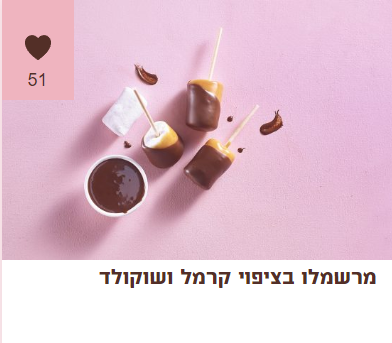

מצרכים:
- 1 שקית מרשמלו עלית
- 15 סוכריות טופי קרמל
- 1 מיכל שמנת מתוקה 38%
- 200 גרם שוקולד מריר עלית
אופן ההכנה:
- בסיר בינוני שמים סוכריות טופי ושמנת מתוקה וממיסים על אש נמוכה-בינונית עד שנוצר קרמל חלק. מצננים מעט.
- בינתיים ממיסים את השוקולד עד שנוצר רוטב שוקולד חלק.
- טובלים כל מרשמלו בקרמל עד 3/4 גובה ומניחים על תבנית עם נייר אפייה. מצננים עד שהקרמל מתייצב.
- טובלים את המרשמלו המצופה בשוקולד, נפטרים מעודפי שוקולד ומעבירים למקרר ל-10 דקות עד שהשוקולד מתייצב.